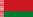
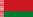
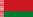

UnRealUNion
虚拟国联盟 X 2022年诺贝尔奖
2022年诺贝尔物理学奖
在有关量子纠缠的实验，确立贝尔不等式的违背验证以及开拓量子信息科学
Alain_Aspect
John_Francis_Clauser
A._Zeilinger
2022年诺贝尔文学奖
勇敢、冷静而敏锐地揭露了个体记忆的起源、隔阂与集体压抑
Annie_Ernaux_al_Salone_del_Libro
2022年诺贝尔化学奖
在点击化学与生物正交化学取得的成就
Carolyn_Bertozzi Morten_Peter_Meldal
Barry_Sharpless
2022年诺贝尔生理学或医学奖
对已灭绝古人类的基因组及人类进化方面的发现
Professor_Svante_Paabo
2022年诺贝尔和平奖
促进批评权力的权利，保护公民的基本权利，为记录战争罪行、侵犯人权和滥用权力作出杰出努力。
Alaksandr_Bialacki
Emorial
Центр Громадянських Свобод


 Alain_Aspect
Alain_Aspect

 John_Francis_Clauser
John_Francis_Clauser

 A._Zeilinger
A._Zeilinger
 Annie_Ernaux_al_Salone_del_Libro
Carolyn_Bertozzi
Morten_Peter_Meldal
Barry_Sharpless
Annie_Ernaux_al_Salone_del_Libro
Carolyn_Bertozzi
Morten_Peter_Meldal
Barry_Sharpless
 Alaksandr_Bialacki
Alaksandr_Bialacki
 Emorial
Emorial
 Центр Громадянських Свобод
Центр Громадянських Свобод